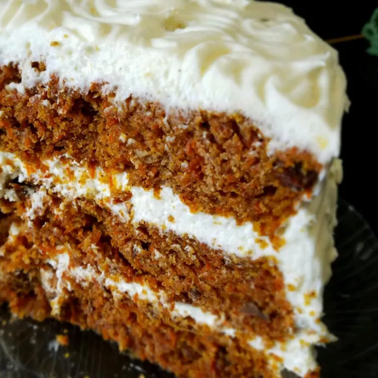

Apparently The Best Carrot Cake Ever

Description
This is supposed to be "The best carrot cake ever," according to the recipe's original creator. I've had some pretty good carrot cake in my time,
and I'm not sure this person really understands the task at hand; How important it is to the ecosystem of baking that we don't go around claiming
the title for best ever carrot cake all willy-nilly. Carrot cake canon has been a hotly debated field for centuries, ever since it's invention circa
1807 by Roger D. Carrot Cake. To think a plebian could waltz right in and claim victory in carrot cake baking! Here is the recipe, for those who wish to test
it against tried and true carrot cakes of years past.
Ingredients
- 6 cups of grated carrots
- 1 cup of brown sugar
- 1 cup of raisins
- 4 eggs
- 1.5 cups of white sugar
- 1 cup of vegetable oil
- 2 teaspoons vanilla extract
- 1 cup crushed pineapple, drained
- 3 cups of all-purpose flour
- 4 teaspoons of ground cinnamon
- 1.5 of baking soda
- 1 teaspoon of salt
- 1 cup of chopped walnuts
Directions
- Combine grated carrots and brown sugar in a medium bowl. Let sit for 1 hour, then stir in raisins. Starting off trite and over played.
- Preheat the oven to 350 degrees F (175 degrees C). Grease and flour two 10-inch round cake pans. What else were they supposed to do? Use octagonal cake pans?
- Beat eggs in a large bowl until light. Gradually beat in white sugar, oil, and vanilla. Stir in pineapple. Combine flour, cinnamon, baking soda, and salt in a separate bowl,
then stir into egg mixture until absorbed. Stir in carrot mixture and walnuts. Pour evenly into the prepared pans.
- Bake in the preheated oven until an inserted toothpick comes out clean, 45 to 50 minutes.
Cool for 10 minutes before removing cake layers from the pans; let cool completely.
- Scoff at how generically above average the carrot cake is.